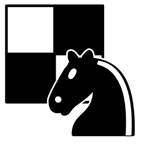
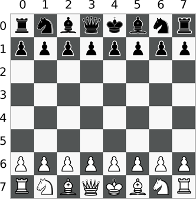

Prev - #8 Read Write File | Table of Contents | Next - #10 Find and Replace
getChessSquareColor(7, 7) → 'white'
getChessSquareColor(1, 0) → 'black'

A chess board has a checker-pattern of white and black tiles. In this program, you’ll determine a pattern to the color of the squares based on their column and row. This program challenges you to take a real-world object such as a chess board, determine the patterns behind its design, and translate that into Python code.
Exercise Description
Write a getChessSquareColor() function
that has parameters column and row.
The function either returns 'black' or 'white' depending on the color at the specified column and row. Chess boards
are 8 x 8 spaces in size, and the columns and rows in this program begin at 0 and end at 7 like in Figure
9-1. If the arguments for column or row are outside the 0 to 7 range, the function returns a blank string.
Note that chess boards always have a white square in the top left corner.

Figure 9-1: A chess board with labeled columns and rows.
These Python assert statements stop
the program if their condition is False. Copy them
to the bottom of your solution program. Your solution is correct if the following
assert statements’ conditions are all True:
assert getChessSquareColor(0, 0) == 'white'
assert getChessSquareColor(1, 0) == 'black'
assert getChessSquareColor(0, 1) == 'black'
assert getChessSquareColor(7, 7) == 'white'
assert getChessSquareColor(0, 8) == ''
assert getChessSquareColor(2, 9) == ''
Try to write a solution based on the information in this description. If you still have trouble solving this exercise, read the Solution Design and Special Cases and Gotchas sections for additional hints.
Prerequisite concepts: Boolean operators, modulo operator
Solution Design
There is a pattern to the colors of a chess board. If the column
and row are both even or both odd, then the space is white. If one is odd and
the other is even, the space is black. Exercise #3, “Odd & Even” shows how
the % modulo operator determines if a number (such
as the one in the column and row
parameter) is even or odd. Use this to write a condition that determines if the
oddness or evenness of the column and row match.
Special Cases and Gotchas
The function should first check whether the column or row
argument is outside the 0 to 7
range of valid values. If so, the function should immediately return a blank
string.
Now try to write a solution based on the information in the previous sections. If you still have trouble solving this exercise, read the Solution Template section for additional hints.
Solution Template
Try to first write a solution from scratch. But if you have difficulty, you can use the following partial program as a starting place. Copy the following code from https://invpy.com/chesscolor-template.py and paste it into your code editor. Replace the underscores with code to make a working program:
def getChessSquareColor(column, row):
# If the column and row is out of bounds, return a blank string:
if column ____ or ____ > 8 or ____ < 1 or row ____:
return ''
# If the even/oddness of the column and row match, return 'white':
if ____ % 2 == row % ____:
return 'white'
# If they don't match, then return 'black':
else:
return 'black'
The complete solution for this exercise is given in Appendix A and https://invpy.com/chesscolor.py. You can view each step of this program as it runs under a debugger at https://invpy.com/chesscolor-debug/.
Prev - #8 Read Write File | Table of Contents | Next - #10 Find and Replace